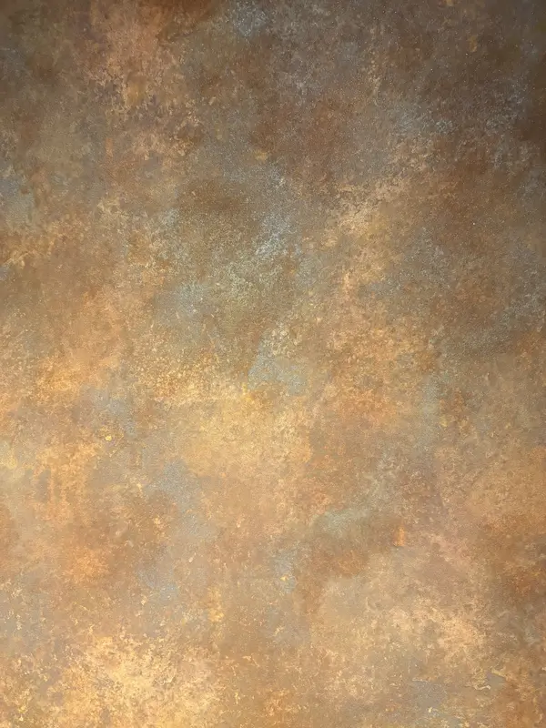
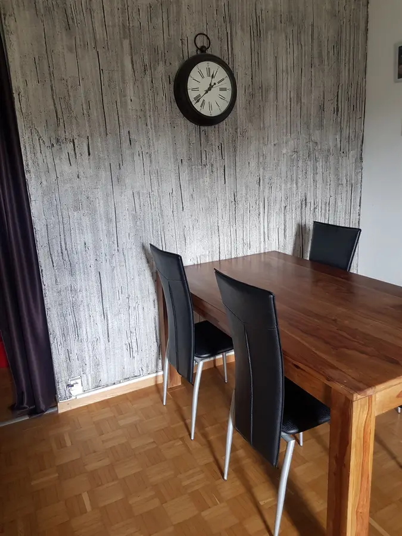
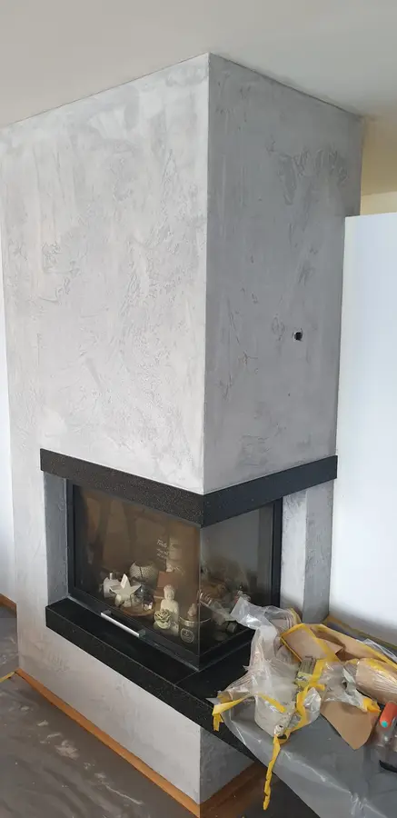
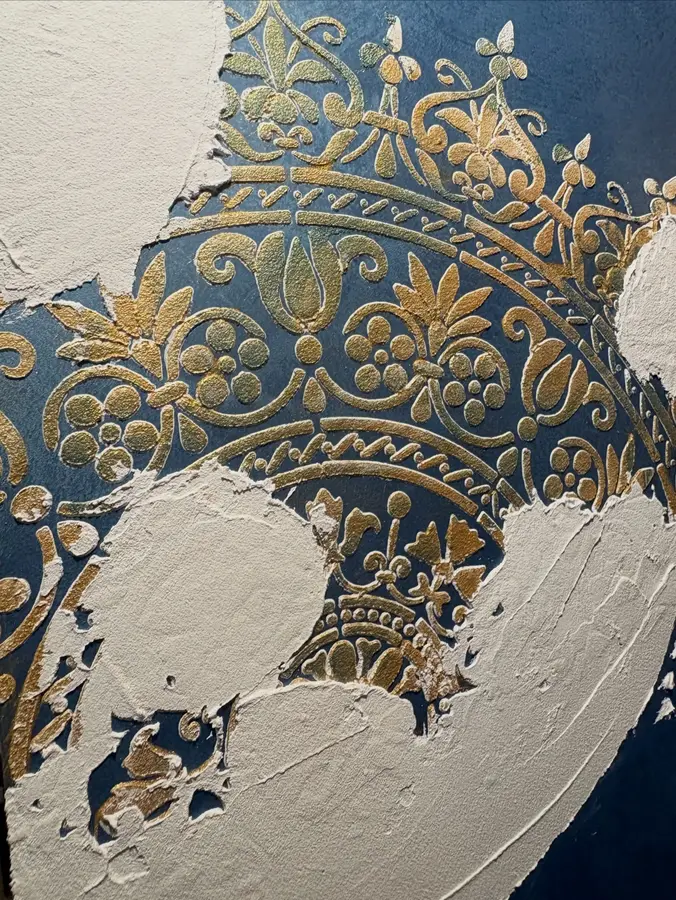
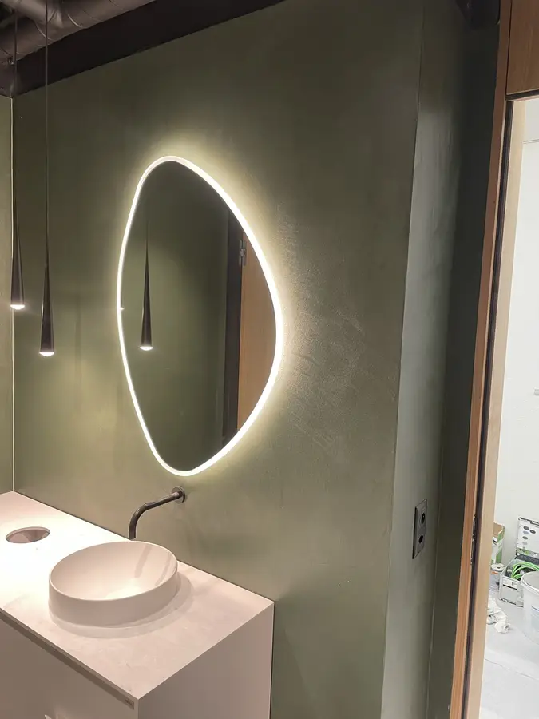
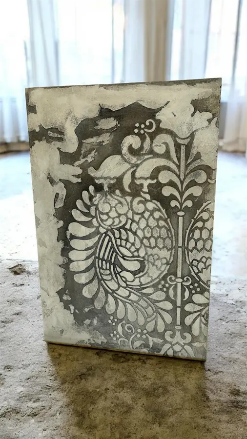
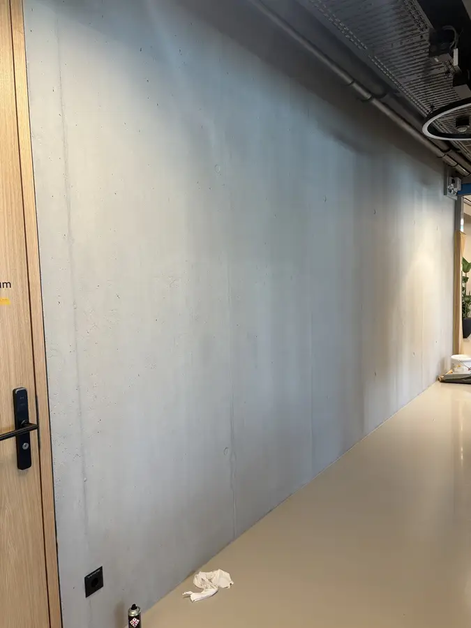

Oberflächendesign
Dekorative Oberflächen
Natürliche Materialien für Wand und Boden, für Räume mit eigener Handschrift und einem guten Raumklima.

Projekt im Fokus
Küchenwand in Rost-Optik
Mit einem Metall-Effektputz in zwei Schichten entsteht eine Wand, die aussieht wie gealtertes Metall. Kupfer, Rost und ein Hauch Blau wechseln sich ab, je nach Licht wirkt die Fläche anders.
- MaterialMetall-Effektputz, zweischichtig
- RaumKüche, Akzentwand
- WirkungMetall- und Rost-Optik






